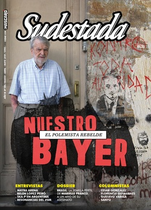

Buscar
Para derrotar al patriarcado, hay que luchar junto a las travas
Como parte de los feminismos, pero sobre todo como activista luchadora por los derechos de la comunidad travesti trans, me preocupa el crecimiento del discurso trava-trans-odiante que se viene filtrando en los espacios de militancia colectiva que supimos construir junto al movimiento de mujeres y lesbianas; y comprendo que desde el odio y el ataque hacia una población que siempre ha sido excluida, estigmatizada y criminalizada no se gana en derechos ni se avanza en libertades para mujeres cis.
Edición N° 156
Marzo-Abril-Mayo 2019
Revista bimensual
Comprar edición impresaSumario
- Nuestro Bayer. El polemista rebelde
- Los tiempos del parásito
- La semilla regada a sangre
- “Me cuestionan que estoy muy politizada, como si eso fuese algo malo”
- "El arte es una herramienta para explorar nuestro propio feminismo"
- Ska-P en Argentina. Los hijos del pueblo
- Las mujeres estamos en emergencia
- La espalda de una amistad
- El corazón lleno de fotos
- Una muerte mapuche, un crimen de Estado
- Machismo y música popular. Abran las tranqueras
- Arbolito Nicasio Maciel Fútbol Ranquel
- Para derrotar al patriarcado, hay que luchar junto a las travas
Compartir Articulo
Como parte de los feminismos, pero sobre todo como activista luchadora por los derechos de la comunidad travesti trans, me preocupa el crecimiento del discurso trava-trans-odiante que se viene filtrando en los espacios de militancia colectiva que supimos construir junto al movimiento de mujeres y lesbianas; y comprendo que desde el odio y el ataque hacia una población que siempre ha sido excluida, estigmatizada y criminalizada no se gana en derechos ni se avanza en libertades para mujeres cis.
Sobre este discurso que penetra dentro de nuestros espacios de lucha, en las redes sociales e incluso en los medios de comunicación, vemos día a día cómo gran parte de las mujeres que lo llevan adelante no se hacen cargo de su odio hacia nuestra identidad de género, travestis y trans.
Sus argumentaciones reduccionistas se basan en la deshumanización y en la cosificación de travestis y trans, por el solo hecho de tener pene; cuando la construcción de nuestra identidad de género como hecho político y revolucionario, aceptando nuestra genitalidad y cuerpos disidentes, se sustentó en el feminismo, constituyéndonos así como feminidades.
Sin embargo, se habla de nosotras como si no estuviéramos ahí, en la misma trinchera de lucha junto a mujeres lesbianas y disidencias, enfrentando a un mismo opresor: el patriarcado y el sistema capitalista. Se habla de nosotras como si no tuviésemos una historia de batallas, de hermandad junto a otras oprimidas, hablan de nosotras como si no tuviéramos voz, nos siguen analizando, nos siguen patologizando, seguimos siendo sus objetos de estudio, como si nuestra comunidad no tuviese décadas de escribir, teorizar.
La genitalidad parecería ser la condición para callar algunas voces (las voces travestis) en tiempos donde todas gritamos No nos callamos más, y es por eso que me atrevo a escribir estas palabras: porque nosotras tampoco nos callamos más, porque nosotras no nos corremos más de los lugares que supimos construir. Se pretende dejarnos afuera de los espacios que venimos construyendo juntas por el simple hecho de SER, de portar una genitalidad que está asociada a la masculinidad, al opresor.
Muchas de las mujeres que sostienen estos argumentos violentos por descalificantes y opresores, jamás han tenido contacto real con una travesti, jamás se interiorizaron sobre las condiciones a las que somos sometidas por el sistema patriarcal al que dicen querer derribar, nunca establecieron ningún tipo de vínculo emocional con una de nosotras, pero les alcanza con decir "tienen pene" para sentenciarnos. De este modo, nos ponen en el mismo lugar que a los machos.
Sobre nosotras inventan, o mejor dicho, se basan en mentiras y prejuicios, para armar campañas de lo peligroso que es compartir espacios con nosotras, como por ejemplo los baños. ¿Por qué van a entrar a "nuestros" baños?, se preguntan. ¿Es que acaso debemos recordarles que siempre fuimos a los baños de "mujeres"?. Entendemos que esto es otra estrategia para poner en agenda el pánico sexual, nuevamente basándose en argumentos biologicistas, subsumiéndonos a ser simplemente un objeto, un pene. Un pene violador que va a entrar a esos espacios a violar mujeres.
¿Realmente creen que las travestis somos "violadores"? ¿Hasta cuándo vamos a permitir que se diga que podemos ser potenciales violadores por nuestra genitalidad? ¿No estamos en un momento de comprensión de que quienes realmente nos violan son aquellas personas que se entrometen en nuestras entrepiernas sin consentimiento?
Es necesario aclarar que las mujeres que sostienen este discurso responden al llamado "feminismo trans excluyente" más conocido por sus siglas en inglés TERF (Trans-Exclusionary Radical Feminist). Es una rama del feminismo radical que considera que travestis y mujeres trans son varones infiltrados en el feminismo y que no han padecido la socialización de género que han padecido las mujeres cis para ejercer su rol social. Esto último demuestra su ignorancia sobre la socialización de las infancias travestis y trans, altamente vulneradas. Por otra parte, su repudio no incluye a varones o masculinidades trans, porque sí les consideran mujeres por tener vulva. Así como los sectores religiosos sostienen sus discursos retrógrados en lo biológico, las terf también...
(La nota completa en la edición gráfica de Sudestada... ¿Por qué publicamos apenas un fragmento de cada artículo? Porque la subsistencia de Sudestada depende en un 100 por ciento de la venta y de la confianza con sus lectores, no recibimos subsidios ni pauta alguna, de modo que la venta directa garantiza que nuestra publicación siga en las calles. Gracias por comprender)
Comentarios
Florencia Guimaraes García
Articulos más vistos


LIBRERÍA SUDESTADA

Colección infantil

Distribuidora de Libros

Suscripción

Sudestada en URUGUAY

Otros articulos de esta edición
Machismo y música popular. Abran las tranqueras
Son días de acciones para la concientización frente a las desigualdades de género y de visibilidad para las artistas femeninas ...
Los tiempos del parásito
?Dueños de todas las cosas, también pretenden apropiarse del sentido común y del imaginario colectivo. Para ese objetivo, mantienen firme ...
Las mujeres estamos en emergencia
En enero de este año hubo, al menos, 27 femicidios televisados y los primeros días de febrero los números siguieron ...
Nuestro Bayer. El polemista rebelde
Lejos del bronce que distorsiona su voz rebelde y fogosa, elegimos recordar a Bayer como siempre lo sentimos: como un ...
“Me cuestionan que estoy muy politizada, como si eso fuese algo malo”
Desde un barrio humilde de Bahía Blanca hizo escuchar su voz. Era una voz diferente, genuina, que contaba escenas de ...
El corazón lleno de fotos
Erica y Bernardo viajan por todo el país. En sus valijas llevan sus cámaras y un proyecto: “Memoria Escolar”. En ...